Anything you can name
I want a fire extinguisher.
No camera image is used. Shap-E builds it from words alone.
Making a 3D object for VR usually means modelling software, an asset library, or reaching through controllers and menus. A virtual world has no physical limits, yet we still mostly reach, grab and press buttons.
My contribution: 3D objects by voice alone. Say what you want, or point at something real in view, and a usable 3D object appears in mixed reality. Naming something builds it from words; saying “in front of me” copies it from one camera frame. Once the object exists your voice moves it.
There are two ways to ask. Name anything you can imagine, or point at a real object in view and get a 3D copy of it. For a copy, you also choose where its surface comes from.
I want a fire extinguisher.
No camera image is used. Shap-E builds it from words alone.
Generate the green water bottle in front of me.
The shape comes from the camera. The colours are written by AI from a short description.
Generate the green water bottle in front of me.
SAM 2.1 finds the bottle’s own pixels, so the real label appears on the copy.
Once an object exists, your voice becomes the controller. Short commands move, spin, copy or resize it, and your hands still work at the same time.
Spin the car.Starts a continuous spin
Stop spin.Stops all movement
Move the car to the left.Slides it in that direction
Duplicate the car.Makes an independent copy
Make the car smaller.Scales it down
| You say | Uses the camera | Shape from | Surface from | |
|---|---|---|---|---|
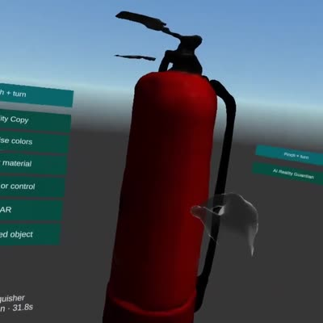 Create anything | “I want a fire extinguisher.” | No | Shap-E, from text | Shap-E |
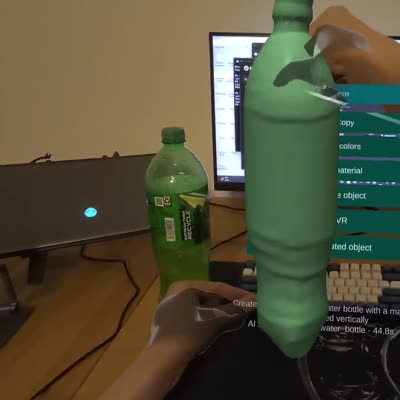 Copy, AI material | “… the bottle in front of me.” | One frame | Hunyuan3D-2, one view | Colours suggested by Qwen3-VL |
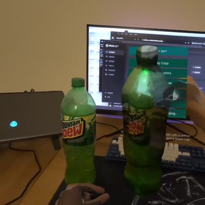 Copy, real colours | “… the bottle in front of me.” | One frame | Hunyuan3D-2, one view | The object’s own pixels, via SAM 2.1 |
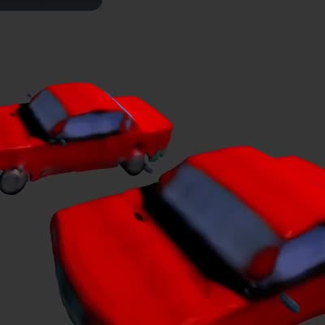 Voice control | “Duplicate the car.” | No | Changes an object that already exists | |
The PICO 4 Ultra runs on a mobile chip. These AI models are far too large for its memory and processor, so the headset is linked to a Windows laptop with an RTX 4060 by USB.
The headset only tracks, captures and displays. The laptop listens, runs every model and returns a small finished mesh. Nothing is uploaded to the cloud.
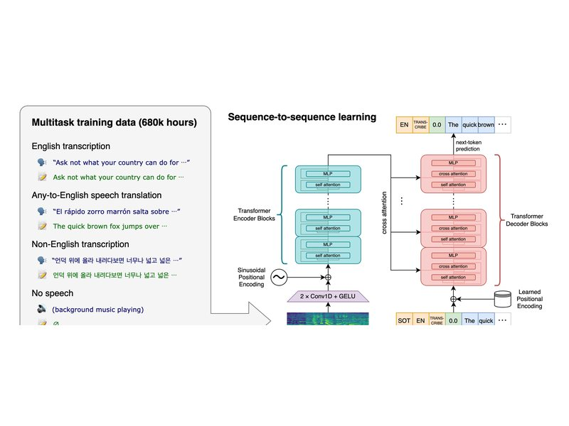
Turns your speech into text. It sends after about 350 ms of silence, so you just stop talking.
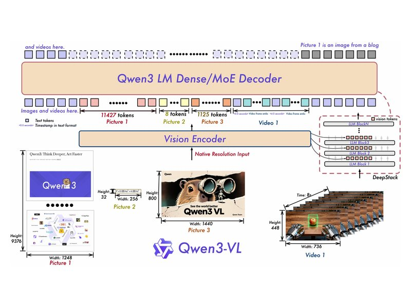
Looks at the frame, boxes the object you meant and describes it, including colours for the AI material.
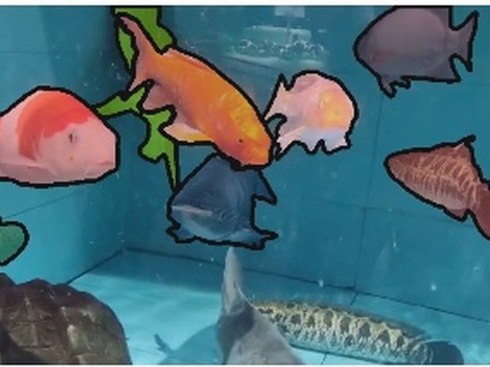
Cuts the object out at the pixel level, so the desk never ends up on the copy.
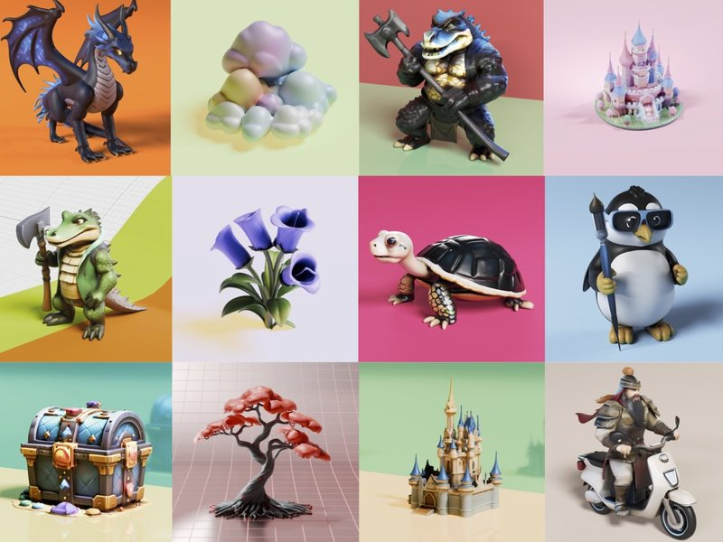
Builds a full 3D shape from one photo, guessing the back the camera never saw.
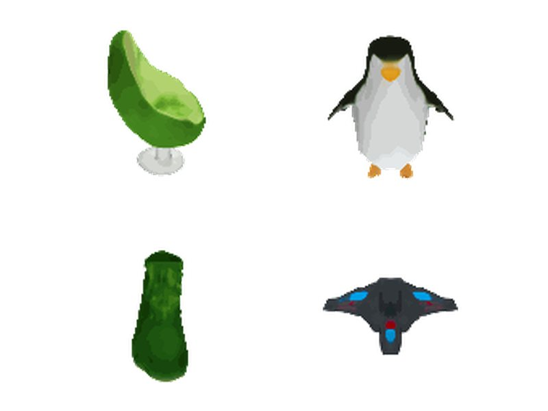
Makes a 3D object from text alone, used for anything you only imagine.
Model images: each model’s official GitHub repository.
Directions this pipeline opens up. None of them are tested yet.
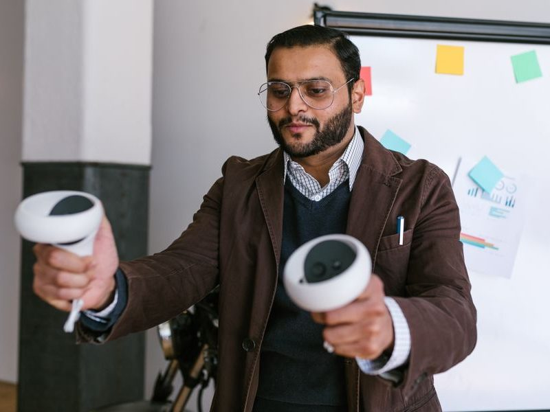
Describe a prop and judge it at full scale in the room.
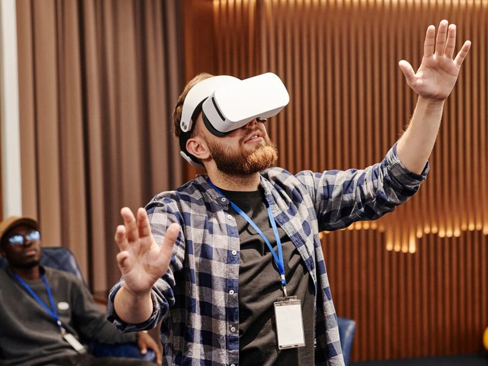
People who can’t use modelling software can still make and arrange objects.
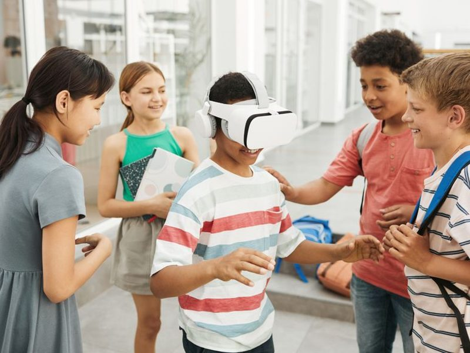
Hold the real object beside its copy and see what was guessed.
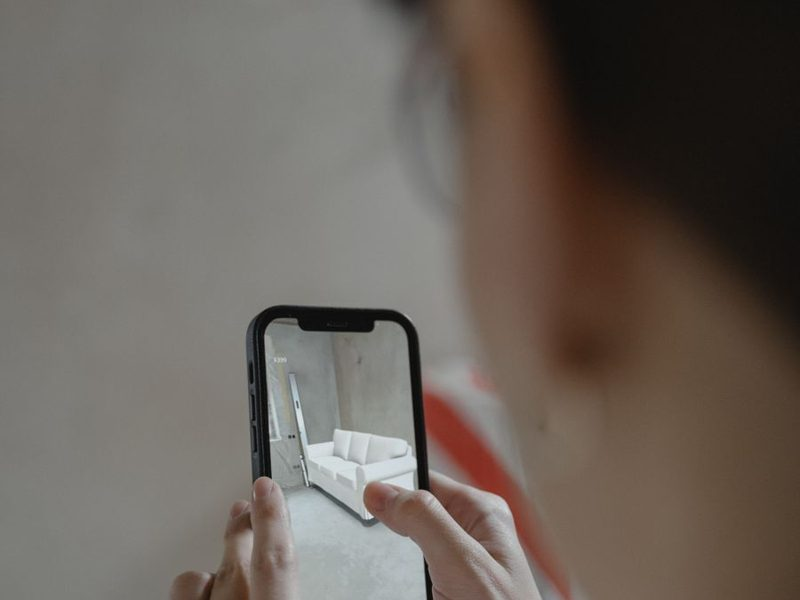
Copy or describe a product and place it in your own room.
Photos: Pexels